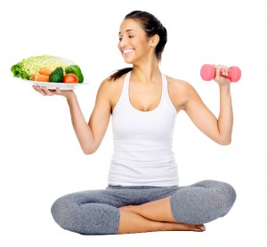
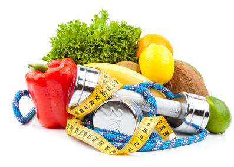
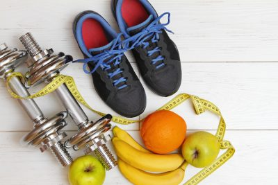

<body background="fon2a.jpg">
 </body>
     <h1 align="center"> Спорт и правильное питание – залог красоты и здоровья <br> </h1>
      <p align="left">
<font size=6>
<div align="justify">
<i>«Спорт и правильное питание – залог красоты и здоровья» - вот известный всем лозунг. Но, если про то, что представляет из себя правильное питание известно, если не всем, то очень многим, то про спорт следует рассказать чуть побольше.<br>
Когда о спорте говорят, как об образе жизни, многие сразу думают о необходимости каждый день ходить в спортзал, а по вечерам и по утрам еще совершать пробежки вокруг дома – в теплое время года, а так же кататься зимой на лыжах, в свободное же время бежать качать пресс и приседать.
Такое представление о спортивных людях складывается, когда заходишь к ним в инстаграм. После таких посещений чужих профилей думаешь: лучше уж раз в неделю зарядку делать, а пока я не готов быть таким же сильным, красивым и целеустремленным, как они.<br>
Тут то и кроется главная ошибка и обман: спорт – он и есть наша жизнь. Быть спортивным можно все так же по старинке делая зарядку, пусть иногда (даже те же самые 1-2 раза в неделю) посещая фитнес-зал и, конечно, просто благодаря увеличению времени ходьбы. Встать пораньше и пройтись одну-две остановки вместо того, чтобы просидеть их на сидении автобуса. Если ты живешь не на 20 этаже, то можно пожертвовать парой минут времени и подняться пешком. Так, постепенно привыкая больше двигаться, вы получите в награду красивое, а самое главное – здоровое и крепкое тело.
Спорт сам по себе – так же очень полезен. Он способствует укреплению мышц, что является профилактикой такой известной и почти повсеместной болезни, как остеохондроз. Он помогает нашей коже быть подтянутой и эластичной, что является профилактикой старения.<br>
<center></center>
</font>
</p>
</html> 